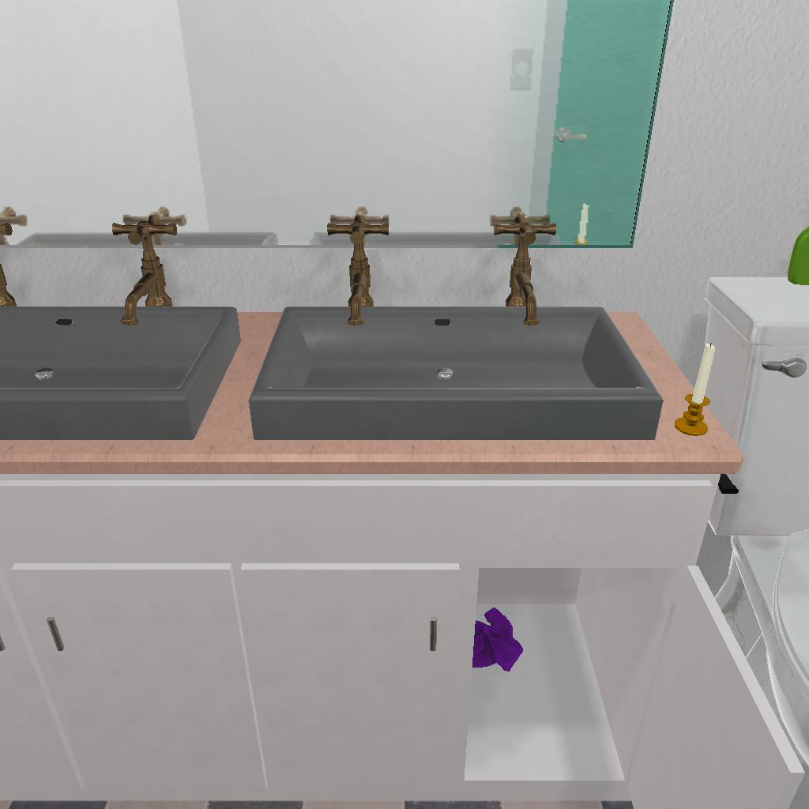

---------------------------------------------------------task: 9---------------------------------------------------------
--------------------------------------------------------------------------------------------------------------------------------------------------------------------
--------------------------------------------------------------------------------------------------------------------------------------------------------------------
Step:--------------------------------------------------------------------------16-------------------------------------------------------------------------------
----------------------------------------
VLM Prompt:
Image1:
Image2:
**Instruction**
1. Analyze the provided images to identify all visible household objects and compare the difference between images (e.h. whether the object is opened or not and taken on hand or not), focusing on those relevant to the task description "put some soapbottle on toilet."
2. Use the analysis of images and the task hint "The agent must find an object of the desired type, pick it up, find the correct location to place it, and put it down there." to answer the question: what is the most reasonable action in the choices for the task description "put some soapbottle on toilet"?
3. Decide and write the answer using the template: The answer is: (i): , where i is the real number. If there is no desired object in images, search every place based on **Initial Observation** to find the object. And if no one is exactly correct, choose a similar answer.
**Initial Observation**
You are in the middle of a room. Looking quickly around you, you can see bathtub (1), bathtubbasin (1), toilet (1), cabinet (1-4), sink (1-2), countertop (1), sinkbasin (1-2), toiletpaperhanger (1), towelholder (1), garbagecan (1), handtowelholder (1)
**Answer Choices**
(1): go to bathtub 1
(2): go to bathtubbasin 1
(3): go to toilet 1
(4): go to cabinet 1
(5): go to sink 1
(6): go to sink 2
(7): go to countertop 1
(8): go to cabinet 4
(9): go to sinkbasin 1
(10): go to sinkbasin 2
(11): go to toiletpaperhanger 1
(12): go to towelholder 1
(13): go to garbagecan 1
(14): go to handtowelholder 1
(15): open cabinet 3
(16): close cabinet 3
(17): take faucet 1 from cabinet 3
(18): take faucet 2 from cabinet 3
(19): take cloth 1 from cabinet 3
(20): take candle 1 from cabinet 3
(21): take spraybottle 1 from cabinet 3
**Answer**
Let's think step by step by following the instructions.
----------------------------------------
----------------------------------------
Original Response:
First, we analyze the images provided. In both images, we can see two sinks with faucets, a countertop, and a cabinet with one door open (cabinet 3) revealing a purple object inside. There is no soap bottle visible on the countertop or in the open cabinet.
Given the task description "put some soapbottle on toilet," we need to find a soap bottle. Since it is not visible in the images, we must search for it based on the initial observation. The most likely places to find a soap bottle would be in a cabinet or on a countertop near the sink, as these are common storage areas for such items in a bathroom.
Based on the initial observation, there are four cabinets (cabinet 1-4) and one countertop (countertop 1) mentioned. We can eliminate the options related to the bathtub, bathtub basin, toilet, sink, sink basin, toilet paper hanger, towel holder, garbage can, and hand towel holder as these are not typical storage places for a soap bottle.
Looking at the answer choices, we can see that cabinet 3 is already open, and there is no soap bottle inside. Therefore, we can disregard the actions related to cabinet 3 (open, close, take items from cabinet 3). The next reasonable action would be to search the remaining cabinets.
The answer is: (4): go to cabinet 1.
----------------------------------------
----------------------------------------
>>> Refine Original VLM Response and Get Pure Action: go to cabinet 1
----------------------------------------
-----------------------------------------------------------------
Running time: 15.96475338935852 seconds
Total Money: 3.986990000000003
-----------------------------------------------------------------
-----------------------------------------------------------------
Text Observation:You arrive at loc 3. The cabinet 1 is closed.
-----------------------------------------------------------------
UNSUCCEED